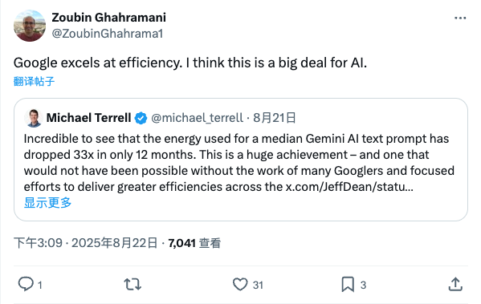

ZoubinGhahrama1_谷歌Gemini AI能效显著提升
发布时间: 2025-08-22T07:09:09.000Z 谷歌AI负责人Zoubin Ghahramani转发推文，指出谷歌在AI效率方面表现卓越。Michael Terrell透露，Gemini AI文本提示的平均能耗在短短12个月内降低了33倍，这是一项巨大成就。此进展得益于谷歌工程师的努力和对效率提升的专注，对AI领域具有重要意义。
2025-08-22
谷歌AI负责人Zoubin Ghahramani转发推文，指出谷歌在AI效率方面表现卓越。Michael Terrell透露，Gemini AI文本提示的平均能耗在短短12个月内降低了33倍，这是一项巨大成就。此进展得益于谷歌工程师的努力和对效率提升的专注，对AI领域具有重要意义。
Google DeepMind联合创始人Demis Hassabis转发推文，揭示了Google DeepMind最新推出的Genie 3模型。该模型能够通过文本指令生成交互式的3D世界，用户可实时导航并与场景中的物体进行互动，例如打开车门或穿过花坛。Genie 3的发布标志着AI在生成沉浸式虚拟环境方面取得重大进展，为未来虚拟现实和游戏开发带来无限可能。
Yupp平台宣布已集成DeepSeek v3.1 Thinking与Chat模型。DeepSeek v3.1版本内置混合思维能力，旨在提供更快速的响应和更强大的、具备工具使用能力的智能代理。此次集成将显著提升Yupp平台在AI交互和自动化任务处理方面的表现，为用户带来更高效的AI体验。
OpenAI联合RetroBiosciences宣布其定制大型语言模型gpt-4b micro在生物学领域取得重大进展。该模型成功设计出诺贝尔奖得主山中伸弥因子（Yamanaka factors）的新型变体，在体外细胞重编程效率上较标准OSKM蛋白提升了50倍。此突破性研究展示了AI加速科学发现和药物研发的巨大潜力。
埃隆·马斯克宣布，xAI正在构建的Colossus 2将成为全球首个千兆瓦级AI训练超级计算机，标志着AI算力发展迈向新里程碑。戴尔公司创始人迈克尔·戴尔也证实了对xAI的访问，并表达了对xAI成就的赞赏和支持，强调了戴尔在其中的参与，预示着未来AI基础设施的巨大进步。
Anthropic发布最新研究，探索在AI模型预训练阶段过滤危险信息的方法。该研究旨在从模型训练数据中移除关于化学、生物、放射性及核（CBRN）武器的信息，同时确保不影响模型在无害任务上的性能表现。此举是Anthropic在AI安全和负责任AI发展方面的重要实践。
华为诺亚方舟实验室联合香港大学发布了一篇关于深度研究代理的系统性综述，从“流程”视角详细阐述了其四大核心阶段：规划、问题构建、网页探索和报告生成。文章深入分析了单代理与多代理系统优劣，并探讨了优化与评估方法，如参数优化和基准测试。该综述旨在为构建深度研究代理提供清晰的操作蓝图，并指出未来面临的挑战，包括工具集成、事实性保障以及多模态信息处理，为AI研究员和工程师提供了宝贵的参考。
南京大学与TeleAI联合发布长视频自回归生成新范式MMPL（Macro-from-Micro Planning），旨在突破当前AI长视频生成中画面漂移、效率低下等瓶颈。MMPL借鉴电影工业“分镜脚本+多组并行拍摄”理念，首创“宏观规划、微观执行”双层架构，通过稀疏锚点规划和并行内容填充，有效缓解误差累积，并大幅提升生成效率。该范式显著提升了长视频的视觉质量、时间一致性和稳定性，实现分钟级视频的近实时预览（最高32 FPS），为AI视频创作带来革命性进展，推动AI向“导演”角色迈进。
DeepSeek V3.1发布后，其对“UE8M0 FP8”参数精度及“下一代国产芯片”的提及，引发国产芯片板块集体暴涨。文章深入解析了UE8M0 FP8作为一种高效浮点格式的优势，包括显著节省带宽、降低功耗和提升吞吐量，使其更适配国产AI加速器。此举被视为国产AI走向软硬协同的关键一步，有望大幅提升国产芯片的“性价比”，并实质性减少对国外算力的依赖，构建类似“Wintel联盟”的本土生态体系。

Sim是一个专注于构建和部署AI智能体工作流的平台。它提供灵活的云托管和多种自托管选项，包括NPM包、Docker Compose、Dev Containers以及手动配置。该项目采用Bun、Next.js、PostgreSQL（集成pgvector）、Drizzle ORM等先进技术栈，并支持与Ollama集成以运行本地AI模型。Sim旨在简化AI智能体应用的开发与管理，为用户提供高效、可扩展的解决方案，以快速实现复杂的AI工作流。

Project AIRI旨在重塑AI虚拟角色Neuro-sama，构建一个可与用户互动、玩游戏、聊天的数字伴侣。该项目利用WebGPU、WebAssembly等Web技术，实现跨浏览器和移动设备的运行能力，同时桌面版支持NVIDIA CUDA和Apple Metal。AIRI集成了多种大型语言模型API，支持VRM和Live2D模型，具备语音识别、语音合成、记忆系统等功能，并能控制虚拟角色进行游戏（如Minecraft、Factorio）和社交平台互动，致力于让用户轻松拥有个性化的数字生命。

SQLBot是一款基于大模型和RAG技术的智能问数系统，旨在通过高质量的text2sql能力，实现数据的高效查询与分析。它具备开箱即用、易于集成和安全可控的特点，用户只需简单配置即可快速部署。SQLBot支持嵌入到第三方业务系统，并可被n8n、MaxKB等AI应用开发平台调用，为各类应用提供智能问数能力，同时通过工作空间隔离和细粒度权限控制确保数据安全。

bitnet.cpp是微软官方推出的1比特大语言模型（如BitNet b1.58）推理框架，提供高度优化的内核，旨在实现CPU和GPU上的快速、无损推理。该框架在ARM CPU上实现1.37倍至5.07倍的加速，在x86 CPU上实现2.37倍至6.17倍的加速，同时显著降低能耗。它使得在单CPU设备上运行100B规模的BitNet b1.58模型成为可能，速度可达每秒5-7个token，大幅提升了LLM在本地设备上的边缘推理能力和效率。

近年来，大量开源基础模型涌现，在一些广受关注的领域取得了显著进展，性能已相当接近闭源模型。然而，在价值高但更具挑战性的科学专业领域，这些领域要么仍依赖专家模型，要么通用基础模型的进展与热门领域相比显著滞后，远不足以变革科学研究，并且在这些科学领域中，开源模型与闭源模型之间存在巨大差距。为了弥合这一差距并进一步探索迈向人工通用智能（AGI）的步伐，我们推出了Intern-S1，一个专业的通用模型，它具备通用理解和推理能力，并拥有分析多种科学模态数据的专业知识。Intern-S1是一个多模态混合专家（MoE）模型，拥有280亿激活参数和2410亿总参数，在5万亿个token上持续预训练，其中包括超过2.5万亿个来自科学领域的token。在后训练阶段，Intern-S1在InternBootCamp中经历了离线和在线强化学习（RL），我们在此提出了奖励混合（MoR）方法，以协同对1000多个任务同时进行RL训练。通过算法、数据和训练系统的综合创新，Intern-S1在在线RL训练中取得了顶尖性能。在综合评估基准上，Intern-S1在通用推理任务中展现出开源模型中的竞争力，并在科学领域显著超越开源模型，在分子合成规划、反应条件预测、预测晶体热力学稳定性等专业任务中超越了闭源最先进模型。我们的模型可在https://huggingface.co/internlm/Intern-S1获取。

本文介绍了 GUI-Owl，一个基础的 GUI 智能体模型，它在桌面和移动环境的十个 GUI 基准测试中，在开源端到端模型中取得了最先进的性能，涵盖了基础定位、问答、规划、决策和程序性知识。GUI-Owl-7B 在 AndroidWorld 上达到了 66.4 分，在 OSWorld 上达到了 29.4 分。在此基础上，我们提出了 Mobile-Agent-v3，一个通用 GUI 智能体框架，它将 AndroidWorld 上的性能进一步提高到 73.3 分，OSWorld 上的性能提高到 37.7 分，为开源 GUI 智能体框架树立了新的最先进水平。GUI-Owl 融合了三项关键创新：(1) 大规模环境基础设施：一个基于云的虚拟环境，涵盖 Android、Ubuntu、macOS 和 Windows，支持我们的自演进 GUI 轨迹生成框架。该框架通过自动化查询生成和正确性验证来生成高质量的交互数据，利用 GUI-Owl 迭代地优化轨迹，形成一个自我改进的循环。它支持多样化的数据管道并减少了手动标注。(2) 多样化的基础智能体能力：通过整合 UI 基础定位、规划、动作语义和推理模式，GUI-Owl 支持端到端决策，并可以在多智能体系统中作为模块化组件。(3) 可扩展的环境强化学习：我们开发了一个可扩展的强化学习框架，采用完全异步训练以实现与真实世界的对齐。我们还引入了轨迹感知相对策略优化 (TRPO) 用于在线强化学习，在 OSWorld 上达到了 34.9 分。GUI-Owl 和 Mobile-Agent-v3 已在 https://github.com/X-PLUG/MobileAgent 开源。

工具调用已成为AI智能体与现实世界交互并解决复杂任务的关键能力。尽管模型上下文协议（MCP）为工具集成提供了强大的标准化框架，但在基准测试AI智能体如何有效解决使用多样化MCP工具的多步骤任务方面，尤其是在现实、动态场景中，存在显著空白。在这项工作中，我们提出了LiveMCP-101，这是一个包含101个精心策划的真实世界查询的基准，这些查询通过迭代的LLM重写和人工审查进行完善，需要协调使用多种MCP工具，包括网络搜索、文件操作、数学推理和数据分析。此外，我们引入了一种新颖的评估方法，该方法利用真实执行计划而非原始API输出，更好地反映了现实世界环境的演变性质。实验表明，即使是前沿的LLM也仅达到低于60%的成功率，这凸显了工具编排中的主要挑战。详细的消融实验和错误分析进一步揭示了独特的故障模式和令牌使用效率低下问题，为改进当前模型指明了具体方向。LiveMCP-101为评估真实世界智能体能力设定了严格标准，推动了自主AI系统通过工具使用可靠执行复杂任务的进展。

我们提出了Waver，一个用于统一图像和视频生成的高性能基础模型。Waver能够直接生成时长5到10秒、原生分辨率为720p的视频，并可随后上采样至1080p。该模型在一个单一的集成框架内同时支持文本到视频（T2V）、图像到视频（I2V）以及文本到图像（T2I）生成。我们引入了一种混合流DiT架构，以增强模态对齐并加速训练收敛。为确保训练数据质量，我们建立了一个全面的数据整理流程，并手动标注和训练了一个基于MLLM的视频质量模型，以筛选出最高质量的样本。此外，我们提供了详细的训练和推理方案，以促进高质量视频的生成。基于这些贡献，Waver在捕捉复杂运动方面表现出色，在视频合成中实现了卓越的运动幅度和时间一致性。值得注意的是，在Artificial Analysis的T2V和I2V排行榜上（数据截至2025年7月30日10:00 GMT+8），Waver均位列前三，持续超越现有开源模型，并与最先进的商业解决方案持平或超越。我们希望这份技术报告能帮助社区更高效地训练高质量视频生成模型，并加速视频生成技术的发展。官方页面：https://github.com/FoundationVision/Waver。

近年来，随着大型语言模型能力深度和广度的快速发展，各种相应的评估基准测试也日益增多。作为衡量模型性能的量化评估工具，基准测试不仅是衡量模型能力的核心手段，也是指导模型发展方向、推动技术创新的关键要素。我们首次系统地综述了大型语言模型基准测试的现状与发展，将283个代表性基准测试分为三类：通用能力、领域特定和目标特定。通用能力基准测试涵盖核心语言学、知识和推理等方面；领域特定基准测试侧重于自然科学、人文社会科学和工程技术等领域；目标特定基准测试关注风险、可靠性、智能体等。我们指出，当前基准测试存在数据污染导致分数虚高、文化和语言偏见导致评估不公以及缺乏对过程可信度和动态环境的评估等问题，并为未来基准测试创新提供了可参考的设计范式。

大型语言模型（LLMs）的最新进展使得AI智能体能够自主生成科学提案、进行实验、撰写论文并执行同行评审。然而，这种由AI生成的研究内容的洪流与一个碎片化且大部分封闭的出版生态系统相冲突。传统的期刊和会议依赖人工同行评审，这使得它们难以扩展，并且通常不愿接受AI生成的研究内容；现有的预印本服务器（例如arXiv）缺乏严格的质量控制机制。因此，大量高质量的AI生成研究缺乏合适的传播途径，阻碍了其推动科学进步的潜力。为了解决这些挑战，我们引入了aiXiv，一个面向人类和AI科学家的下一代开放获取平台。其多智能体架构允许研究提案和论文由人类和AI科学家共同提交、评审和迭代完善。它还提供API和MCP接口，实现异构人类和AI科学家的无缝集成，从而创建一个可扩展的、用于自主科学发现的生态系统。通过大量实验，我们证明aiXiv是一个可靠且稳健的平台，在aiXiv上经过迭代修订和评审后，显著提升了AI生成研究提案和论文的质量。我们的工作为面向AI科学家的下一代开放获取生态系统奠定了基础，加速了高质量AI生成研究内容的出版和传播。